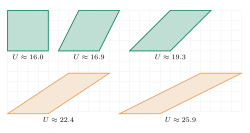

Aufgabe 6.1
Gemeint ist die Aufgabe aus Mathbuch 1 (S. 35), die im Kapitel abgebildet ist.
Welches didaktische Prinzip wird in dieser Aufgabe verwirklicht? Welche Lernchancen, welche Lernschwierigkeiten stecken in der Aufgabe? Welche Anschlussfragen liessen sich stellen?
- Was wird bei der Aufgabe systematisch verändert?
- Was bleibt konstant?
- Welche Entdeckungen können Schülerinnen und Schüler machen?
- Wie hängen die Beobachtungen mit mathematischen Prinzipien zusammen?
So sieht die Reihe aus, um die verlangten zwei Parallelogramme weitergeführt. Alle sind $4$ Häuschen breit und $4$ hoch, die obere Seite rückt jedes Mal um $2$ Häuschen weiter:

Der Flächeninhalt ist jedes Mal $4\cdot 4 = 16$ Häuschen, der Umfang wächst von $16$ über rund $16.9$, $19.3$ und $22.4$ auf $25.9$.
Lernchancen.
- Eine Invarianz entdecken: Die Parallelogramme sehen verschieden aus und haben doch denselben Flächeninhalt. Bei den ersten Parallelogrammen lässt sich das im Heft sogar zeigen: Das überstehende Dreieck links passt in die Lücke rechts. Bei stärkerer Scherung braucht es mehrere Schnitte.
- Höhe statt Seite: Für den Flächeninhalt zählt die Höhe, nicht die schräge Seite. Die schräge Seite wird immer länger, die Höhe bleibt.
- Fläche und Umfang trennen: Die eine Grösse bleibt, die andere wächst. Die beiden Grössen sind nicht aneinander gekoppelt.
Lernschwierigkeiten.
- Fläche und Umfang verwechseln: Wer «grösser» sagt, meint oft beides zugleich.
- Der Schein trügt: Ein stark geschertes Parallelogramm wirkt schmal und «kleiner», oder lang und «grösser».
- Den Umfang bestimmen: Die schräge Seite lässt sich in Mathbuch 1 noch nicht berechnen, der Satz des Pythagoras kommt erst später. Die Lernenden müssen messen, und das ergibt Näherungswerte. Für die Aussage «wächst» genügt das.
Mögliche Anschlussfragen.
- Warum bleibt der Flächeninhalt gleich? Zeige es mit Schere und Papier.
- Geht es auch in die andere Richtung, bis der Umfang am kleinsten ist? Welches Parallelogramm ist das?
- Gibt es Parallelogramme mit gleichem Umfang, aber verschiedenem Flächeninhalt? (Das ist die Umkehrfrage, Aufgabe 6.9 greift sie auf.)
- Gilt dasselbe für Dreiecke, wenn man die Spitze parallel zur Grundseite verschiebt?
Im Video: Etappe 3 · Rolle des Flächeninhalts bei 3:39